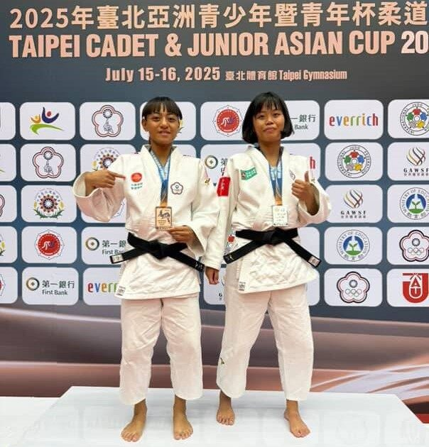
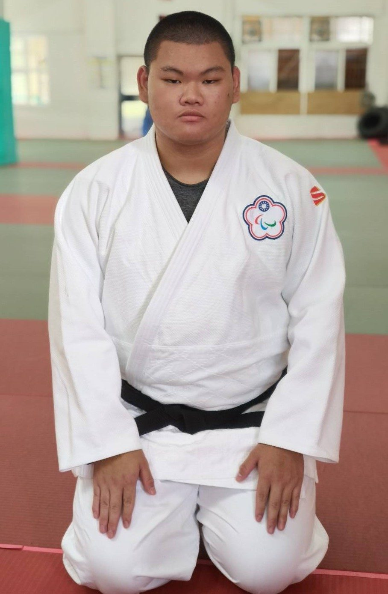
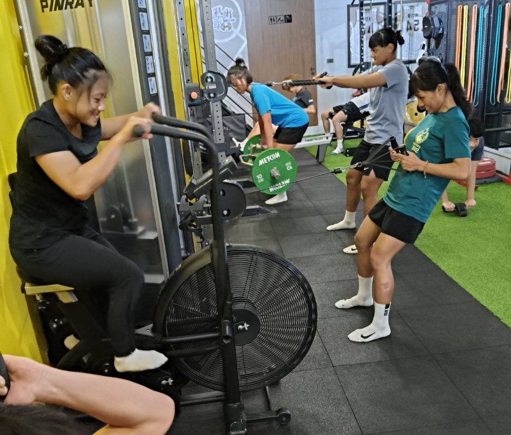

01我的故事
中金院柔道隊由 4 位排灣族、1 位阿美族原住民學生，以及一名弱視帕拉學生所組成。成員多數自小在山林長大，奔跑於河谷、攀爬岩石、追逐飛魚，擁有強健體能，卻缺乏展現舞台。他們的家庭多半以務農或打零工維生，資源有限，但卻擁有單純而堅定的運動熱情。
隊伍中有一位特別的成員──「胖胖」，一位因意外而弱視的帕拉學生。他僅能模糊辨識身影，卻始終以敏銳的力量感知投入訓練。他曾說：「在柔道裡，我只需要感覺對手的力量，就能找到自己的方向。」雖然起初受到質疑，但他用汗水與毅力證明：他能承受相同的摔法、完成同樣的拋投。即便在氣喘如牛、跌倒無數次後，胖胖依舊笑著爬起來，擦去汗水或淚水，說一句「再來！」——成為全隊的精神象徵。
此外，隊伍裡也有來自低收入家庭與單親、母親重度身障的學生。他們以柔道作為築夢之路，靠著比賽表現獲得升學資格與獎助學金，減輕家庭負擔。柔道，對他們來說，不只是運動，更是改變家庭命運的力量。
學校更提供多元的發展管道：設有財金、法律、科技金融與運動產業管理等專業學系，並結合外語與專業證照輔導，協助學生規劃完整職涯。未來，這些學生運動員無論是持續精進柔道、銜接職業運動發展，或跨域進入金融及管理領域，都能具備比一般學生運動員更多的選擇與競爭優勢。
日子一天天過去，孩子們的柔道墊上布滿了汗水與笑聲。他們學的不只是摔倒與站起，更是自律、禮節、紀律與勇氣，因為他們相信今日的磨練是未來的養分，態度會成就高度。



推薦理由
教育與社會價值
扶助弱勢：隊伍成員多為原住民、弱視帕拉與弱勢家庭學生，柔道是他們升學與翻轉家庭的重要途徑。贊助可直接幫助孩子持續接受教育，減輕經濟負擔。
品格教育：柔道強調「精力善用、自他共榮」，贊助即是支持學生培養自律、尊重與團隊精神，發展健全人格。
成果與潛力
優異表現：學生已在全國學生賽與帕拉柔道比賽中展現實力，持續具備奪牌潛力。
人才培育：隊伍將培養具備競技力與專業學科背景的複合型人才，未來有機會銜接國家代表隊或跨域進入金融、法律、產業管理等專業領域。
3. 形象與公益效益
正面品牌形象：支持原住民、身心障礙與弱勢學生的教育與運動發展，能彰顯企業或機構關懷社會、落實多元共融的價值。
媒體與曝光：柔道隊參賽與校內外活動可提供媒體報導、社群推廣機會，提升贊助方品牌能見度。
在地連結：隊伍成員來自部落，贊助將強化企業與地方社區的合作與信任關係。
4. 長期影響
永續發展：透過贊助改善訓練環境、提供資源，能長期支持偏鄉青少年發展。
社會投資報酬：協助學生運動員升學、取得專業證照與更廣的職涯選擇，培養出回饋社會、帶動地方發展的新一代。